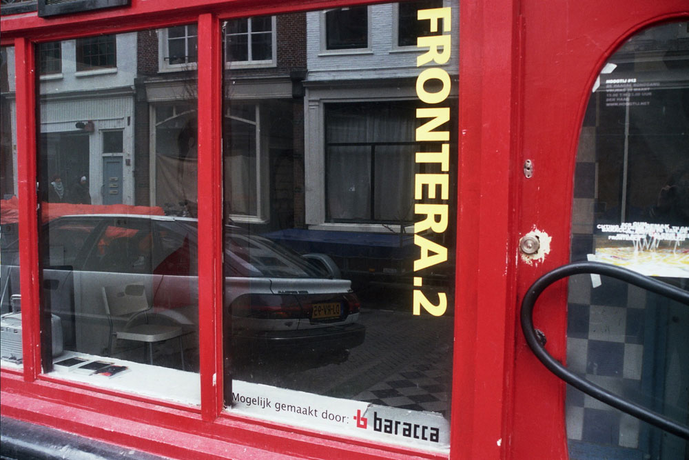
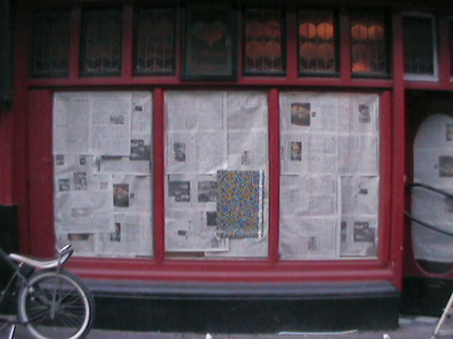

| < vorige | Terug naar overzicht |
Artist Initiative Frontera.2 Den Haag / 2008 - 2009
11. 2. expo 12 sept. 2008 [tijdens hoogtij#15] Installatie Gudubic met muziekperformance Gudubic
10. 2. expo 4 juli 2008 [tijdens hoogtij#14] Tekeningen Ibrahim R. Ineke met optreden Jazztrio met o.a. Eric Ineke
09. 2. expo 23 mei 2008 [tijdens hoogtij#13] Tekeningen Detonation Saints [Ibrahim R. Ineke en Mattijs Mark van Katwijk] sound design: Paul Klaui
08. 2. Expo 2 mei 2008 Installatie Pierre Sondeijker
07. 2. expo 28 maart 2008 [tijdens hoogtij#12] Schilderijen van Martine van Rietschoten,
Marie Civikov, Anne Mercedes Langhorst en Lyz Diephuys
06. 2. expo 25 januari 2008 [tijdens Hoogtij#11] Installatie Yvo van der Vat ‘Movement to be white’
Foto's:
Opening Frontera.2
Frontera.2 nog dicht
www.baracca.nl >

